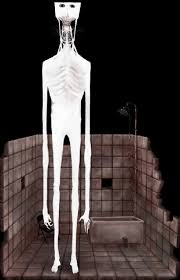
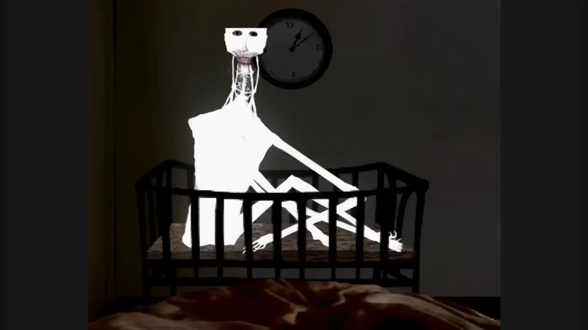

Siempre llega tarde, pero nunca se va.
Culpa, también conocida como "El chico", es un personaje que aparece en "The boy and the bath" (Video en Youtube), un lanzamiento de Doctor Nowhere hecho el 30 de marzo de 2024. Como se nos cuenta en el video, es el espíritu de un bebé ahogado en una bañera, que ahora persigue a un padre desatento para vengarse de él.
Culpa se representa como una figura alta y muy delgada, con la piel blanca y un cuerpo desgarbado y en descomposición. Su cabeza parece cortada, con lo que parecen raíces o moho que salen de su "garganta". Se sugiere que él simboliza la culpa que siente su padre. Presumiblemente, este ser encontró su fin en una bañera, víctima de la negligencia de sus padres.
Es probable que Culpa se represente como un bebé o un niño pequeño, como lo demuestra su representación en una cuna al lado del padre al final del video, y la presencia de una cuna y juguetes en el dormitorio. El video sugiere que Culpa ocupa el baño, junto a la bañera. Las voces en off implican que Culpa simboliza el remordimiento del padre por dejar a su hijo desatendido en el baño, como lo indica la bañera desbordada y la negación de la ocurrencia del evento. Culpa puede ser una alucinación que surge del autodesprecio del padre por sus acciones hacia su bebé, o podría ser una encarnación tangible de los sentimientos antes mencionados. Alternativamente, la cuna podría haber sido destinada a un niño bajo el cuidado de los padres, y la entidad que aparece en el video podría ser responsable de la desaparición o muerte del niño. Además, el padre podría estar esperando un hijo, con la ansiedad manifestándose a partir de temores internos de que el niño pueda morir durante o poco después del parto.
Teniendo en cuenta que este ser es una manifestación de la misma culpa, la mejor manera de evitarlo es no hacer actos que la provoquen.
"¿Por qué me dejaste aquí... Yo nunca existí para ti... Todo esto fue culpa tuya"
-La Culpa
Padre de camino a darse una ducha nocturna
Culpa parada en el baño
Culpa en la cuna